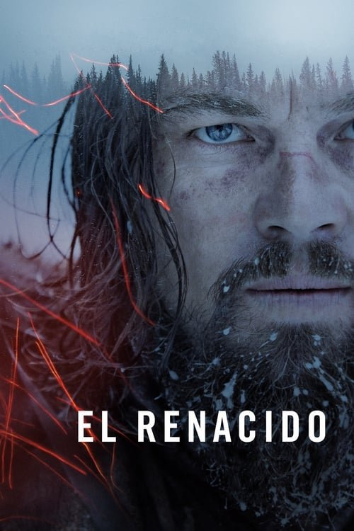

El renacido (2015)

Plataforma: Star+
Puntuación IMDb: 8.0/10
Duración: 2h 36m
Género: Drama de supervivencia
Sinopsis Rápida
Abandonado por sus compañeros y dado por muerto tras un brutal ataque de un oso, un explorador debe luchar contra los elementos y sus propios demonios para sobrevivir en la despiadada naturaleza salvaje.
Sinopsis Detallada
{{SINOPSIS_EXTENDIDA}}
¿Por qué tenés que verla?
- Una experiencia cinematográfica visceral e inolvidable que te dejará pegado al asiento.
- La impresionante dirección de Alejandro González Iñárritu y la fotografía impactante te sumergen en la naturaleza salvaje.
- Su impacto en el cine se refleja en su aclamación crítica y premios, incluyendo el Óscar a Mejor Actor para DiCaprio.
- Explora la resiliencia humana ante la adversidad extrema.
Idea Extra
Análisis de la precisión histórica de 'El Renacido' comparado con la verdadera historia de Hugh Glass.